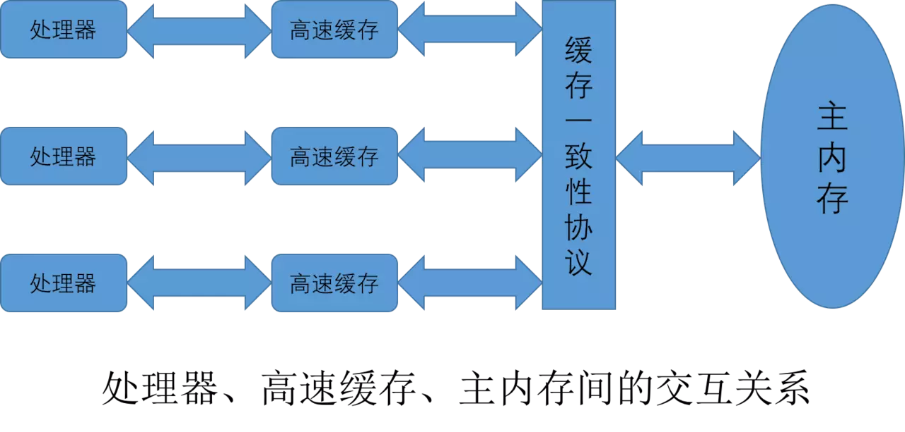
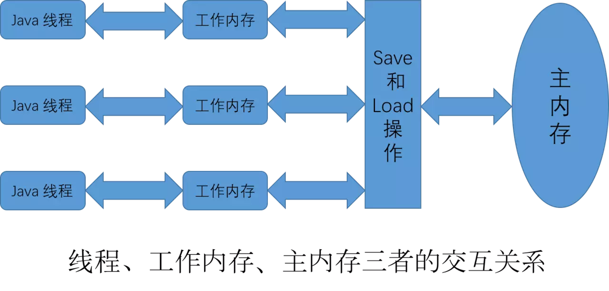
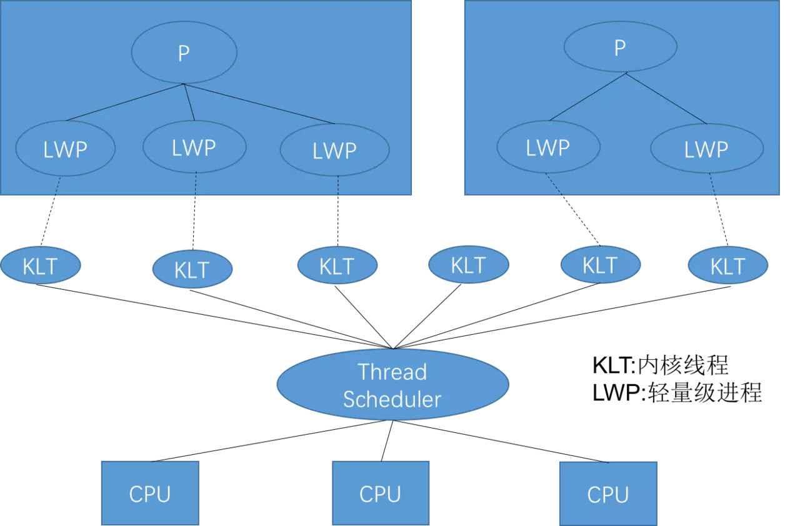
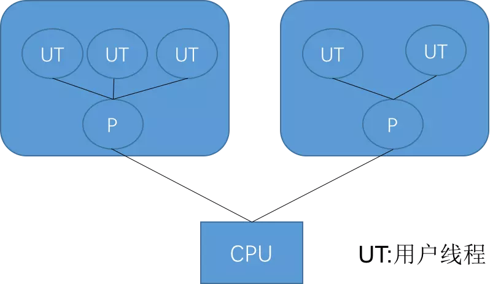
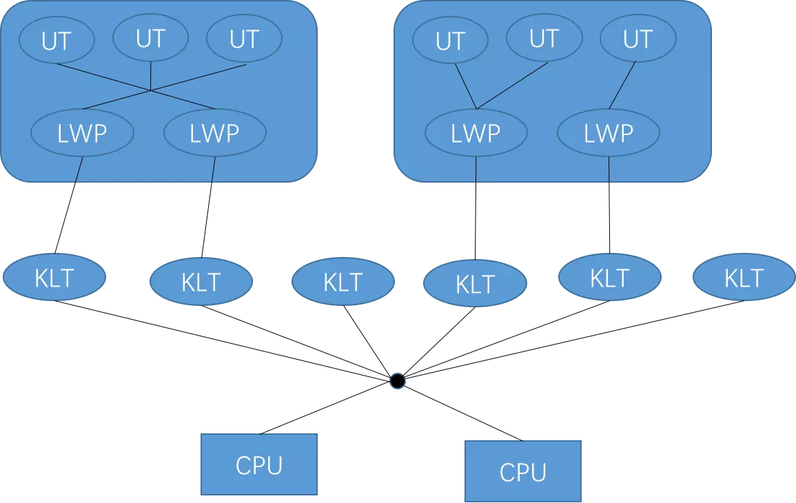
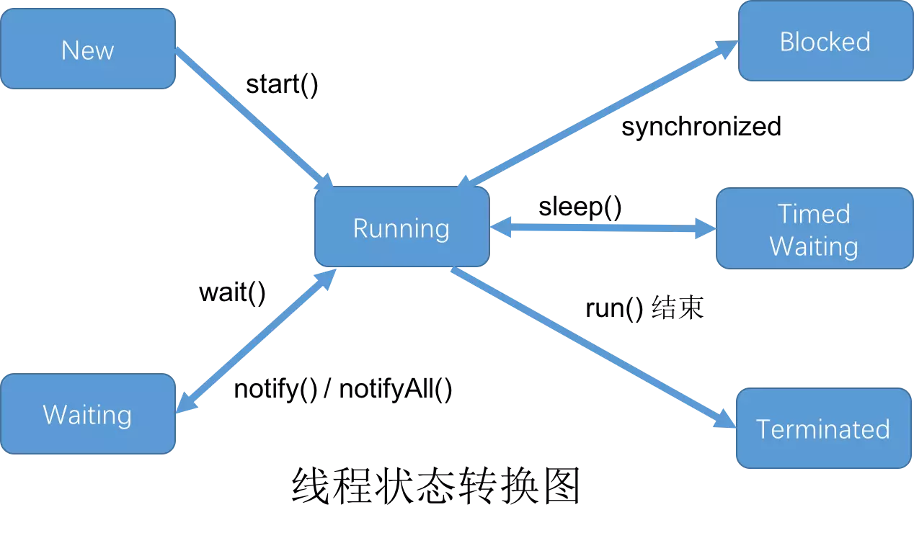

Java 内存模型
屏蔽掉各种硬件和操作系统的内存访问差异。

主内存和工作内存之间的交互
| 操作 | 作用对象 | 解释 |
|---|---|---|
| lock | 主内存 | 把一个变量标识为一条线程独占的状态 |
| unlock | 主内存 | 把一个处于锁定状态的变量释放出来，释放后才可被其他线程锁定 |
| read | 主内存 | 把一个变量的值从主内存传输到线程工作内存中，以便 load 操作使用 |
| load | 工作内存 | 把 read 操作从主内存中得到的变量值放入工作内存中 |
| use | 工作内存 | 把工作内存中一个变量的值传递给执行引擎，每当虚拟机遇到一个需要使用到变量值的字节码指令时将会执行这个操作 |
| assign | 工作内存 | 把一个从执行引擎接收到的值赋接收到的值赋给工作内存的变量，每当虚拟机遇到一个给变量赋值的字节码指令时执行这个操作 |
| store | 工作内存 | 把工作内存中的一个变量的值传送到主内存中，以便 write 操作 |
| write | 工作内存 | 把 store 操作从工作内存中得到的变量的值放入主内存的变量中 |
对于 volatile 型变量的特殊规则
关键字 volatile 是 Java 虚拟机提供的最轻量级的同步机制。
一个变量被定义为 volatile 的特性：保证此变量对所有线程的可见性。但是操作并非原子操作，并发情况下不安全。
如果不符合 运算结果并不依赖变量当前值，或者能够确保只有单一的线程修改变量的值 和 变量不需要与其他的状态变量共同参与不变约束 就要通过加锁（使用 synchronize 或 java.util.concurrent 中的原子类）来保证原子性。
禁止指令重排序优化。
通过插入内存屏障保证一致性。
对于 long 和 double 型变量的特殊规则
Java 要求对于主内存和工作内存之间的八个操作都是原子性的，但是对于 64 位的数据类型，有一条宽松的规定：允许虚拟机将没有被 volatile 修饰的 64 位数据的读写操作划分为两次 32 位的操作来进行，即允许虚拟机实现选择可以不保证 64 位数据类型的 load、store、read 和 write 这 4 个操作的原子性。这就是 long 和 double 的非原子性协定。
原子性、可见性与有序性
回顾下并发下应该注意操作的那些特性是什么，同时加深理解。
原子性(Atomicity)
由 Java 内存模型来直接保证的原子性变量操作包括 read、load、assign、use、store 和 write。大致可以认为基本数据类型的操作是原子性的。同时 lock 和 unlock 可以保证更大范围操作的原子性。而 synchronize 同步块操作的原子性是用更高层次的字节码指令 monitorenter 和 monitorexit 来隐式操作的。
可见性(Visibility)
是指当一个线程修改了共享变量的值，其他线程也能够立即得知这个通知。主要操作细节就是修改值后将值同步至主内存(volatile 值使用前都会从主内存刷新)，除了 volatile 还有 synchronize 和 final 可以保证可见性。同步块的可见性是由“对一个变量执行 unlock 操作之前，必须先把此变量同步会主内存中( store、write 操作)”这条规则获得。而 final 可见性是指：被 final 修饰的字段在构造器中一旦完成，并且构造器没有把 “this” 的引用传递出去( this 引用逃逸是一件很危险的事情，其他线程有可能通过这个引用访问到“初始化了一半”的对象)，那在其他线程中就能看见 final 字段的值。
有序性(Ordering)
如果在被线程内观察，所有操作都是有序的；如果在一个线程中观察另一个线程，所有操作都是无序的。前半句指“线程内表现为串行的语义”，后半句是指“指令重排”现象和“工作内存与主内存同步延迟”现象。Java 语言通过 volatile 和 synchronize 两个关键字来保证线程之间操作的有序性。volatile 自身就禁止指令重排，而 synchronize 则是由“一个变量在同一时刻指允许一条线程对其进行 lock 操作”这条规则获得，这条规则决定了持有同一个锁的两个同步块只能串行的进入。
先行发生原则
也就是 happens-before 原则。这个原则是判断数据是否存在竞争、线程是否安全的主要依据。先行发生是 Java 内存模型中定义的两项操作之间的偏序关系。
天然的先行发生关系
| 规则 | 解释 |
|---|---|
| 程序次序规则 | 在一个线程内，代码按照书写的控制流顺序执行 |
| 管程锁定规则 | 一个 unlock 操作先行发生于后面对同一个锁的 lock 操作 |
| volatile 变量规则 | volatile 变量的写操作先行发生于后面对这个变量的读操作 |
| 线程启动规则 | Thread 对象的 start() 方法先行发生于此线程的每一个动作 |
| 线程终止规则 | 线程中所有的操作都先行发生于对此线程的终止检测(通过 Thread.join() 方法结束、 Thread.isAlive() 的返回值检测) |
| 线程中断规则 | 对线程 interrupt() 方法调用优先发生于被中断线程的代码检测到中断事件的发生(通过 Thread.interrupted() 方法检测) |
| 对象终结规则 | 一个对象的初始化完成(构造函数执行结束)先行发生于它的 finalize() 方法的开始 |
| 传递性 | 如果操作 A 先于 操作 B 发生，操作 B 先于 操作 C 发生，那么操作 A 先于 操作 C |
Java 与线程
线程的实现
使用内核线程实现
直接由操作系统内核支持的线程，这种线程由内核完成切换。程序一般不会直接去使用内核线程，而是去使用内核线程的一种高级接口 —— 轻量级进程(LWP)，轻量级进程就是我们通常意义上所讲的线程，每个轻量级进程都有一个内核级线程支持。

使用用户线程实现
广义上来说，只要不是内核线程就可以认为是用户线程，因此可以认为轻量级进程也属于用户线程。狭义上说是完全建立在用户空间的线程库上的并且内核系统不可感知的。

使用用户线程夹加轻量级进程混合实现
直接看图。

平台不同实现方式不同，可以认为是一条 Java 线程映射到一条轻量级进程。
Java 线程调度
协同式线程调度
线程执行时间由线程自身控制，实现简单，切换线程自己可知，所以基本没有线程同步问题。坏处是执行时间不可控，容易阻塞。
抢占式线程调度
每个线程由系统来分配执行时间。
状态转换
新建(new)
创建后尚未启动的线程。
运行(Runable)
Runable 包括了操作系统线程状态中的 Running 和 Ready，也就是出于此状态的线程有可能正在执行，也有可能正在等待 CPU 为他分配时间。
无限期等待(Waiting)
出于这种状态的线程不会被 CPU 分配时间，它们要等其他线程显示的唤醒。
以下方法会然线程进入无限期等待状态：
1、没有设置 Timeout 参数的 Object.wait() 方法。
2、没有设置 Timeout 参数的 Thread.join() 方法。
3、LookSupport.park() 方法。
限期等待(Timed Waiting)
处于这种状态的线程也不会分配时间，不过无需等待配其他线程显示地唤醒，在一定时间后他们会由系统自动唤醒。
以下方法会让线程进入限期等待状态：
1、Thread.sleep() 方法。
2、设置了 Timeout 参数的 Object.wait() 方法。
3、设置了 Timeout 参数的 Thread.join() 方法。
4、LockSupport.parkNanos() 方法。
5、LockSupport.parkUntil() 方法。
阻塞(Blocked)
线程被阻塞了，“阻塞状态”和“等待状态”的区别是：“阻塞状态”在等待着获取一个排他锁，这个时间将在另外一个线程放弃这个锁的时候发生；而“等待状态”则是在等待一段时间，或者唤醒动作的发生。在程序等待进入同步区域的时候，线程将进入这种状态。
结束(Terminated)
已终止线程的线程状态。
状态转换总结，如下图所示：
